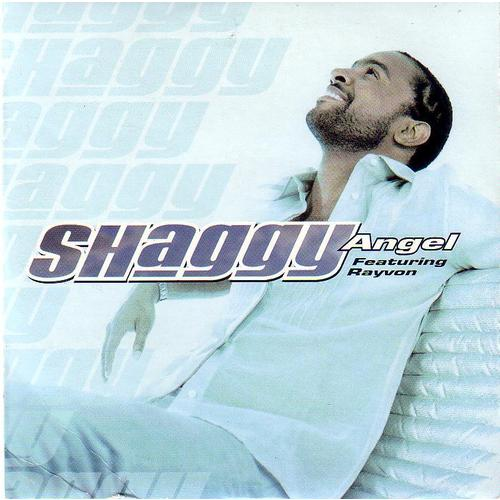

Ángel - Shaggy
"Angel" de Shaggy es uno de los éxitos más emblemáticos del artista, incluido en su álbum Hot Shot de 2001.

La canción fusiona reggae, pop y R&B, creando una atmósfera relajada y pegajosa que rápidamente capturó la atención mundial. La letra narra una historia de amor y gratitud, con Shaggy relatando cómo una mujer lo salvó de una vida de dificultades. La melodía suave, acompañada de una base rítmica contagiante y la distintiva voz de Shaggy, contribuyó a que "Angel" alcanzara el número uno en varias listas internacionales, incluyendo el Billboard Hot 100. Su éxito consolidó a Shaggy como una figura destacada en la música global, y la canción sigue siendo una de sus más queridas por los fans.
Información adicional sobre la canción "Angel" de Shaggy
- Colaboración con Rayvon: La canción cuenta con la participación del cantante de reggae Rayvon, quien contribuye con un coro memorable. Su colaboración le da un toque distintivo, haciendo que la canción tenga un ritmo suave y melódico.
- Inspiración: "Angel" fue inspirada por la canción "Angel of the Morning", una balada popular de los años 60 que ha sido versionada por varios artistas, pero la versión más conocida es la de Juice Newton en 1981. Shaggy toma el tema de un "ángel" que representa a una mujer especial en su vida, pero le da un giro moderno al fusionar el reggae con el pop.
- Letras: La canción es una especie de declaración de amor y gratitud hacia una mujer que ha sido una presencia positiva en la vida del protagonista. En ella, Shaggy compara a su amada con un "ángel", utilizando la metáfora de que ella lo cuida y lo guía, como un ser celestial.
- Recepción: "Angel" fue un éxito masivo, alcanzando el puesto número 1 en el Billboard Hot 100 de EE. UU. y en otras listas internacionales. Se convirtió en una de las canciones más exitosas de Shaggy, consolidando su lugar en la escena musical global.
- Estilo y sonido: La canción tiene un ritmo relajado y una mezcla de reggae con toques de pop, que fue una de las características clave del álbum Hot Shot. Este sonido accesible y su pegajoso coro ayudaron a que "Angel" se convirtiera en un éxito radiante.
- Video musical: El video de "Angel" muestra a Shaggy interactuando con su "ángel" (una mujer) en un ambiente cálido y romántico. Se filmó en escenarios naturales y reflejaba una atmósfera relajada y amorosa, coherente con el tono de la canción.
- Impacto cultural: "Angel" es una de las canciones más emblemáticas de principios de los 2000s y sigue siendo una de las favoritas en las estaciones de radio que tocan música de los 90s y principios de los 2000s. La canción ha sido utilizada en varios programas de televisión, películas y comerciales a lo largo de los años, lo que ha ayudado a mantener su relevancia.